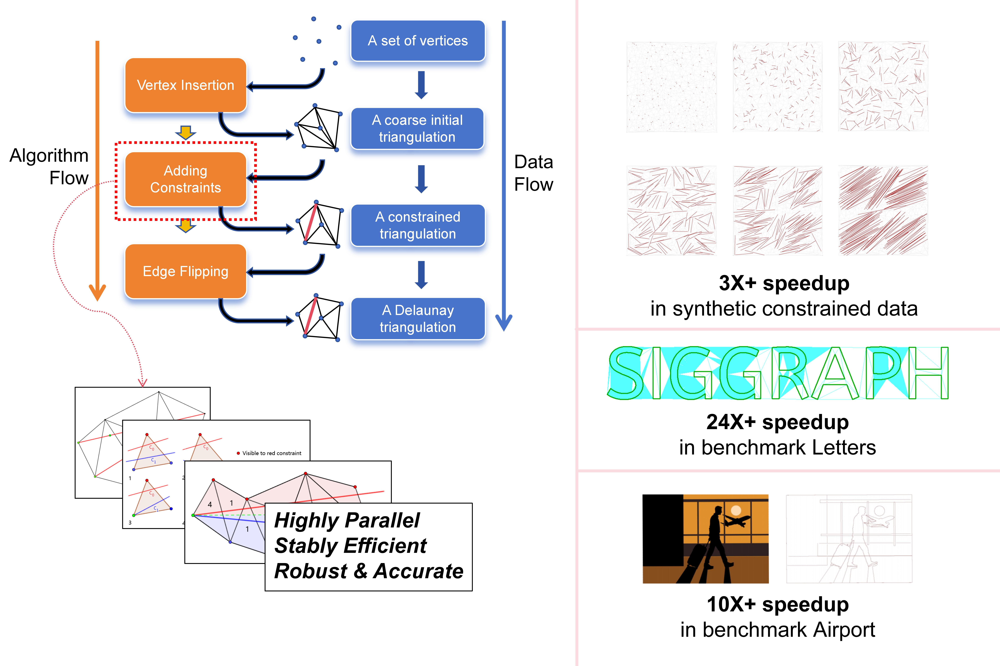

1 - Zhejiang University, China
2 - Zhejiang Sci-Tech University, China
3 - Shenzhen Poisson Software Co., Ltd., China
* - Corresponding Author
Abstract
2D constrained Delaunay triangulation (CDT) is a key component in CAD, visualization, and scientific computing.
We present a highly parallel GPU-based method that is capable of computing CDT for inputs with up to 10
million vertices in 0.1 seconds on a NVIDIA GeForce RTX 4090 GPU, while efficiently and robustly enforcing
arbitrary valid constraints. Across benchmarks with diverse spatial distributions, our method typically delivers
several-fold speedups over the prior state-of-the-art GPU approach and is roughly an order of magnitude faster
than widely used CPU implementations. The efficiency stems from an improved parallel edge-flip scheme coupled
with a constraint-handling algorithm with provable time complexity, enabling stable performance even in
adversarial and worst-case configurations.

Letters benchmark: For a scene containing approximately 900K vertices with numerous constraints of varying sizes, gCDT achieves an overall speedup of roughly 25X over the prior state-of-the-art GPU-based CDT algorithm gDel2D [Qi et al. 2013, 2019], while the constraint-processing component is nearly three orders of magnitude faster.
Paper (PDF 5.76 MB) Video (2.17 MB) Source Code: https://github.com/yingtix/gCDT/
Peng Fan, Min Tang, Ruofeng Tong, Lili He, Peng Du, and Hailong Li. 2026. gCDT: A Highly Parallel GPU Algorithm for Large-Scale Constrained Delaunay Triangulation. In ACM SIGGRAPH 2026 (SIGGRAPH Conference Papers '26), Journal Paper, Los Angeles, CA, USA. ACM, New York, NY, USA, 12 pages.
@inproceedings{gcdt26,
author = {Fan, Peng and Tang, Min and Tong, Ruofeng and He, Lili and Du, Peng and Li, Hailong},
title = {{gCDT}: A Highly Parallel GPU Algorithm for Large-Scale Constrained Delaunay Triangulation},
booktitle = {Proceedings of SIGGRAPH 2026},
location = {Los Angeles, CA, USA},
pages = {1--12},
month = {July}
year = {2026},
}
GPU-accelerated Certified Hausdorff Distance Between Triangle Meshes
gDist: Efficient Distance Computation between 3D Meshes on GPU
CTSN: Predicting Cloth Deformation for Skeleton-based Characters with a Two-stream Skinning Network
D-Cloth: Skinning-based Cloth Dynamic Prediction with a Three-stage Network
N-Cloth: Predicting 3D Cloth Deformation with Mesh-Based Networks
I-Cloth: Incremental Collision Handling for GPU-Based Interactive Cloth Simulation
PSCC: Parallel Self-Collision Culling with Spatial Hashing on GPUs
I-Cloth: API for fast and reliable cloth simulation with CUDA
Efficient BVH-based Collision Detection Scheme with Ordering and Restructuring
MCCD: Multi-Core Collision Detection between Deformable Models using Front-Based Decomposition
TightCCD: Efficient and Robust Continuous Collision Detection using Tight Error Bounds
Fast and Exact Continuous Collision Detection with Bernstein Sign Classification
A GPU-based Streaming Algorithm for High-Resolution Cloth Simulation
UNC dynamic model benchmark repository
Collision-Streams: Fast GPU-based Collision Detection for Deformable Models
Fast Continuous Collision Detection using Deforming Non-Penetration Filters
Fast Collision Detection for Deformable Models using Representative-Triangles
DeformCD: Collision Detection between Deforming Objects
Self-CCD: Continuous Collision Detection for Deforming Objects
Interactive Collision Detection between Deformable Models using Chromatic Decomposition
Fast Proximity Computation Among Deformable Models using Discrete Voronoi Diagrams
CULLIDE: Interactive Collision Detection between Complex Models using Graphics Hardware
RCULLIDE: Fast and Reliable Collision Culling using Graphics Processors
Quick-CULLIDE: Efficient Inter- and Intra-Object Collision Culling using Graphics Hardware
This work was supported in part by the New Generation Artificial Intelligence-National Science and Technology Major Project (2025ZD0123901).